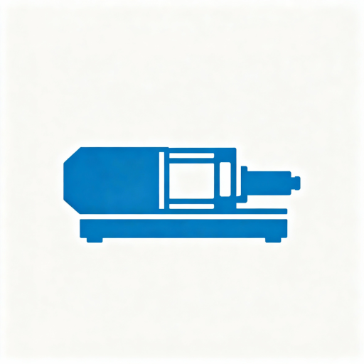

Specjalizuję się w kompleksowej naprawie maszyn Krauss Maffei. Oferuję profesjonalną diagnostykę oraz naprawę wtryskarki z dojazdem do klienta w całej Polsce.
Doświadczenie i specjalizacja w diagnostyce Krauss Maffei
Moja firma specjalizuje się w diagnostyce i naprawie maszyn marki Krauss Maffei. Dzięki wieloletniemu doświadczeniu i głębokiej znajomości tej technologii, jestem w stanie szybko zdiagnozować problem i przeprowadzić skuteczną naprawę.
Oferuję kompleksową usługę z dojazdem do klienta. Nie posiadam stałej lokalizacji - przyjeżdżam bezpośrednio do Państwa zakładu po wcześniejszym umówieniu kontaktu mailowego lub telefonicznego.
Diagnostyka i naprawa maszyn Krauss Maffei: MC6, MC5, MC4, MC4f
Wieloletnia praktyka w branży
Dojazd do klienta
Profesjonalne podejście do każdego zlecenia

Zakres diagnostyki i naprawy moich usług
Zaawansowany system sterowania Krauss Maffei oparty na komputerze przemysłowym z kolorowym, intuicyjnym panelem dotykowym.
Poprzednia generacja z panelem dotykowym, szeroko stosowana w wielu modelach maszyn Krauss Maffei.
Zaawansowane systemy obsługujące integrację robotów i bardziej rozbudowane funkcje kontroli produkcji.
Kompleksowa diagnostyka i naprawa wtryskarek Krauss Maffei
Profesjonalna diagnostyka problemu z wykorzystaniem nowoczesnego sprzętu pomiarowego. Szybka identyfikacja przyczyny awarii i określenie zakresu naprawy.
Kompleksowa naprawa mechaniczna, hydrauliczna i elektryczna.
Profesjonalne doradztwo w zakresie eksploatacji i optymalizacji pracy wtryskarki. Pomoc w doborze parametrów i rozwiązywaniu problemów technologicznych.
Moje przewagi konkurencyjne
Koncentruję się wyłącznie na maszynach tej marki, co gwarantuje najwyższą jakość usługi.
Lata praktyki w diagnostyce i naprawie wtryskarek pozwalają mi szybko rozwiązywać nawet najbardziej skomplikowane problemy.
Przyjeżdżam bezpośrednio do Państwa zakładu, minimalizując przestoje produkcyjne.
Każde zlecenie traktuję indywidualnie, dbając o najwyższą jakość wykonanej usługi.
Skontaktuj się ze mną już dziś
Uwaga: Proszę o kontakt mailowy lub telefoniczny w celu umówienia terminu wizyty.